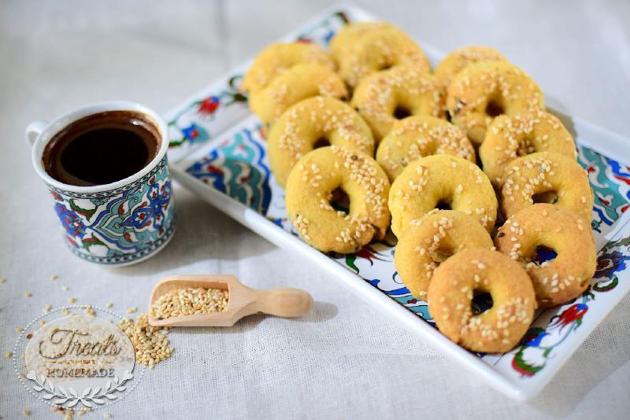

Date_Cookies

Description
Dates are tropical fruits that are grown on date palm trees.It is one of the healthiest fruits in the world.
Dates have high natural sugar content.Including dates in your diet is a great way to increase your fiber intake.
Ingredients
- 1 cup butter, softened
- 1⅓ cups white sugar
- 3 eggs
- 3 cups sifted all-purpose flour
- 1 teaspoon baking soda
- ½ teaspoon ground cinnamon
- ¼ teaspoon ground cloves
- 2 teaspoons water
- 1 ½ cups chopped pitted dates
- 1 cup chopped pecans
Steps
- Cream butter and sugar together in a large bowl until light and fluffy. Add eggs one at a time, beating well with each addition.
Combine flour, baking soda, cinnamon, and cloves;gradually stir into creamed mixture.
Combine water and dates; stir into dough along with chopped pecans. Cover and chill for 1 hour.
- Preheat the oven to 375 degrees F (190 degrees C). Grease cookie sheets. Drop by rounded
spoonfuls onto the prepared cookie sheets.
- Bake for 8 to 10 minutes in the preheated oven. Allow cookies to cool on baking sheet
for 5 minutes before removing to a wire rack to cool completely.